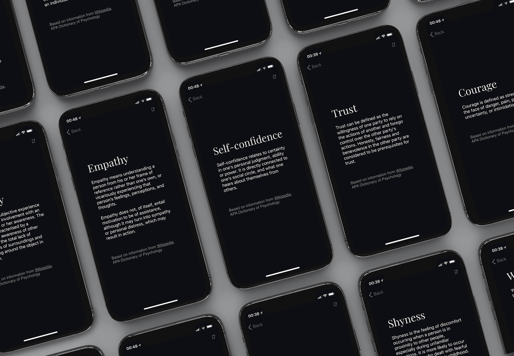
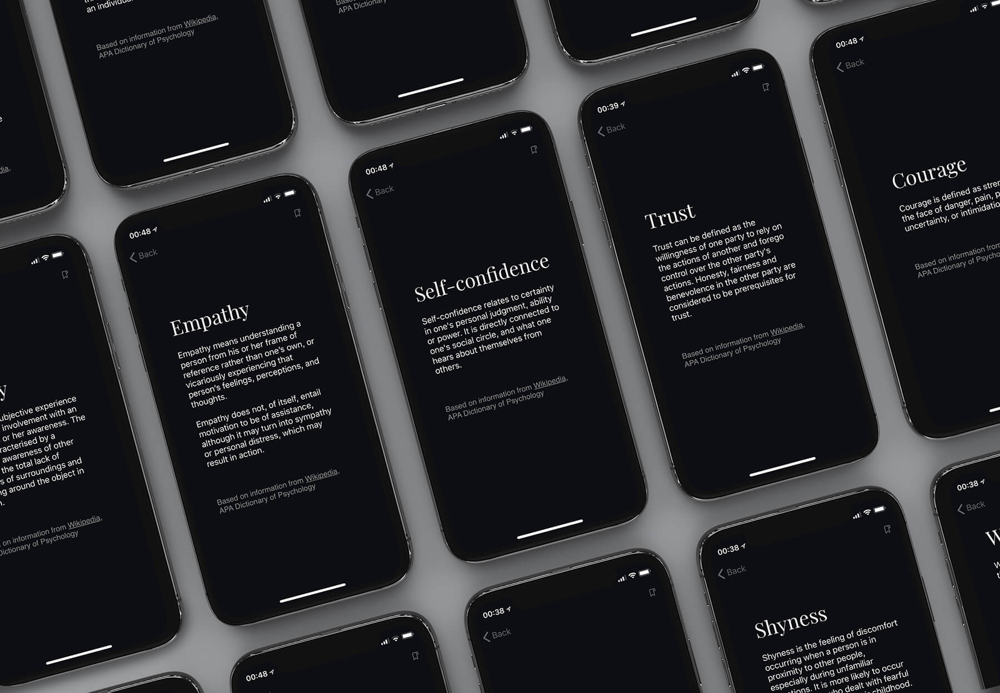

EQ Playbook
If I asked you what frustration, curiosity, or trust are, you would likely know the meaning of the words but couldn't easily define each emotion. I think having a clear and concise definition for each emotion is a good step towards better Emotional Intelligence (EQ) and this app is a personal project that I developed as I was learning to code in the hopes my work will benefit other people too.
Why is it in my portfolio? Because it is a project I researched, designed, developed, published, tested and refined on my own and I believe the lessons I learned have made me a better product designer.
How the project started
The project started more than 2 years ago with me researching how emotions really work (it's actually not complicated). I spent several months reading the theory and summarising my findings.
After I had finished my research and had a good understanding of the topic, I realised it had helped me quite a lot and I wanted to share my work in case other people will find it useful, so I worked with my colleague from Hyperion to develop a website called emotions-dictionary.com
Lessons Learned
The site didn't do very well - people simply didn't understand what its point was. What I learned from this is that presenting and explaining an idea well to its intended audience is as much part of the job as creating a good design.
Around a year later I decided to start learning to code properly (Swift) and there's no better way to learn than working on real projects, so I decided to re-imagine this project as an iOS app. This time, I worked on not just the design and the content, but also put some thinking into how to describe the app and who the people who would find it valuable are.
I decided to provide a much stronger introduction for what this app does and how it can help, build ways to keep people engaged (such as emotion of the day, or the ability to favourite emotions), leverage visuals more heavily to explain the concepts I'm talking about, and use a more suggestive name (people may not search for definitions of emotions, but they are interested in Emotional Intelligence or EQ).
This time around the app did much better and was even featured on Product Hunt.
Where to find it
As I said I built this app while learning to code, so it is fairly simple, and I'm sure the quality of the code is far from great, however, I consider it a valuable learning experience and I am quite proud of how it turned out.
The app is available on the App Store and the source is on GitHub.
Other Apps I made
My newest side project, an iOS app aimed at helping people understand and avoid the most common grammar mistakes, is also live (see the website). This was a particularly interesting project because I got to do everything myself, from the concepts, research, user testing, design, app + site development and marketing. This one also got featured on Product Hunt.
Next Project
Make It Cheaper
Return Home

 
